01
Mais participação
Facilite o acesso da população às atividades esportivas e recupere quem não joga mais.
Atleta do vôlei para prefeituras
Organize campeonatos, conecte atletas e equipes, e leve mais esporte à população — em uma plataforma gratuita, pronta para a sua prefeitura usar.
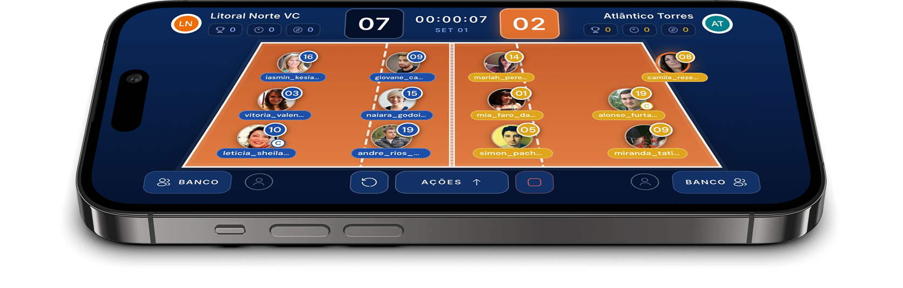
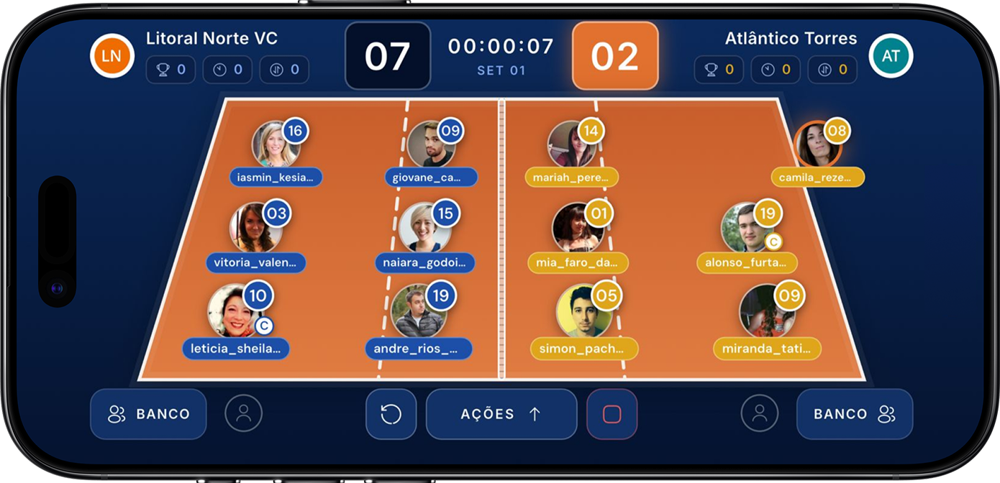
Tudo isso pode estar conectado — e já existe uma plataforma pronta para isso.
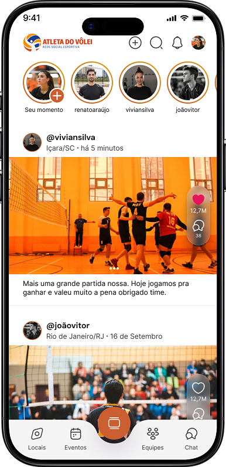
Perfil, nível de jogo e
conexão com os atletas.
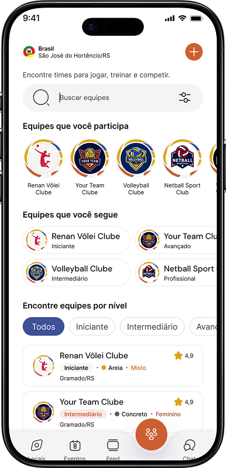
Formação, convites e
comunicação em grupo.
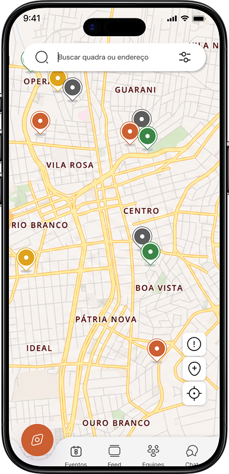
Mapa, acesso e
avaliação dos espaços.
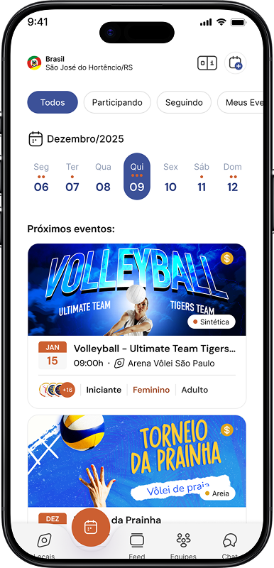
Divulgação, inscrição e
classificações.
O que a prefeitura ganha?
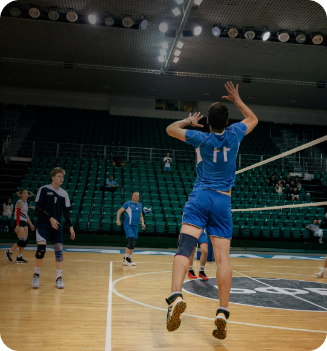
Eventos, equipes
e competições
em um só lugar
Fale diretamente
com atletas e
comunidades.
Tenha uma visão
mais estruturada
do esporte da
sua cidade.
A transformação
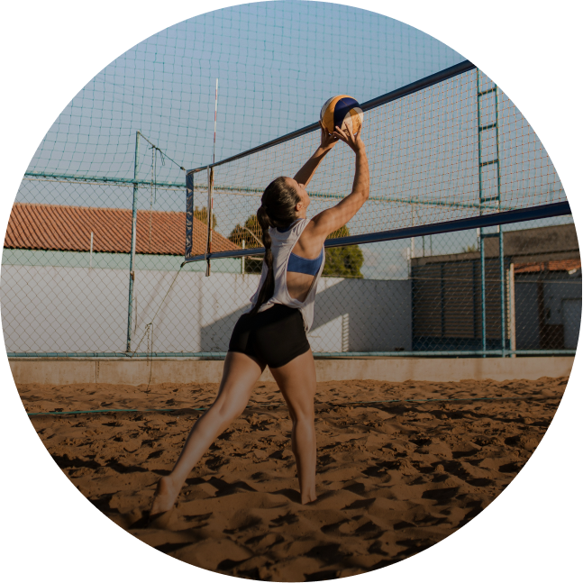
ANTES
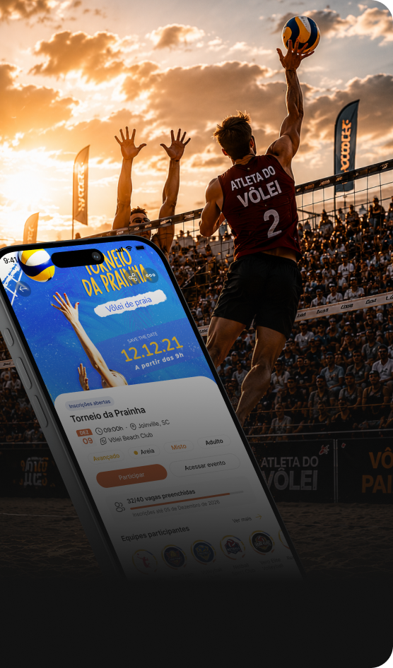
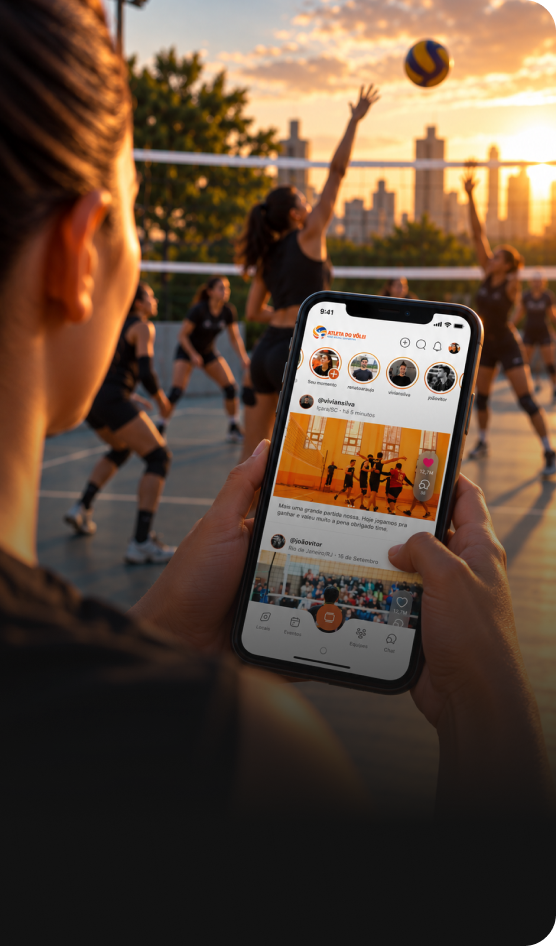
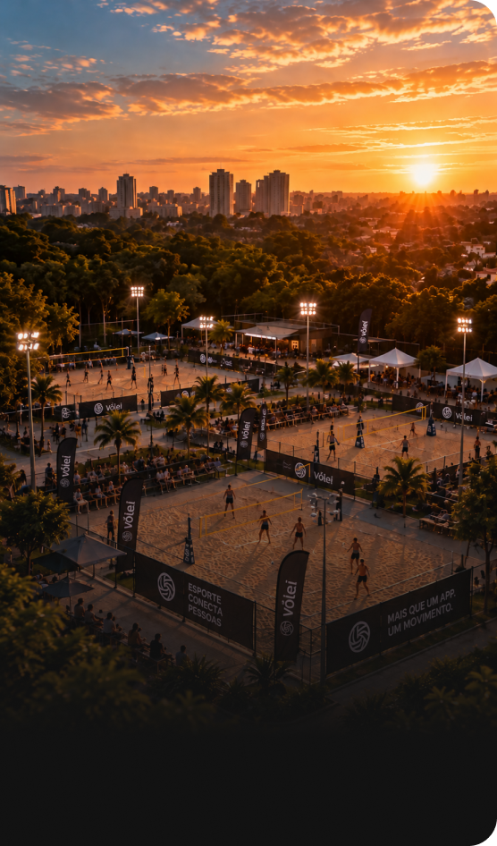
Mais pessoas jogando
Mais esporte acontecendo na sua cidade.
Centralize a gestão esportiva.
Equipes, eventos e informações em um só lugar.
Aproxime a cidade do esporte.
Divulgue ações, eventos e oportunidades para a comunidade.
Dê visibilidade ao esporte local.
Valorize atletas, projetos, equipes e iniciativas da cidade.
Transforme dados em decisões.
Entenda a comunidade esportiva e planeje melhor suas ações.
Benefícios
01
Mais participação
Facilite o acesso da população às atividades esportivas e recupere quem não joga mais.
02
Mais organização
Centralize informações, equipes e eventos.
03
Mais comunicação
Tenha um canal direto com atletas e comunidade, divulgando ações esportivas para quem realmente quer participar.
04
Mais visibilidade
Dê visibilidade a atletas, projetos, professores e iniciativas da cidade.
05
Mais dados
Conheça melhor a comunidade e suas necessidades.
Uma plataforma completa
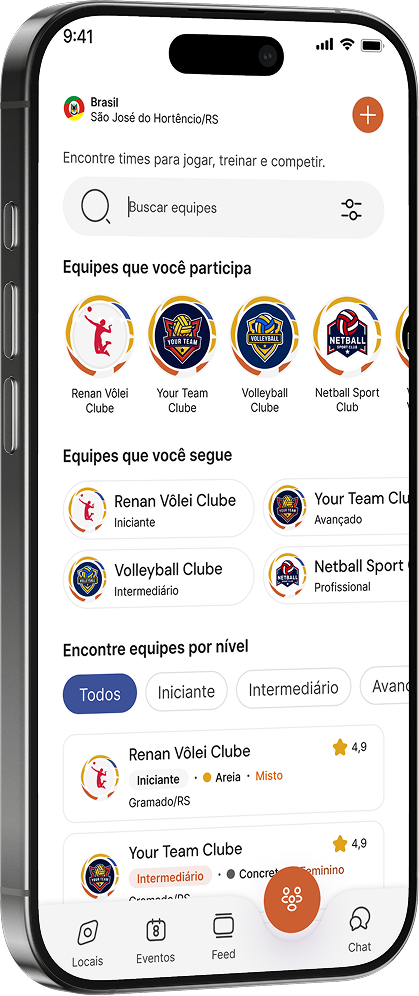
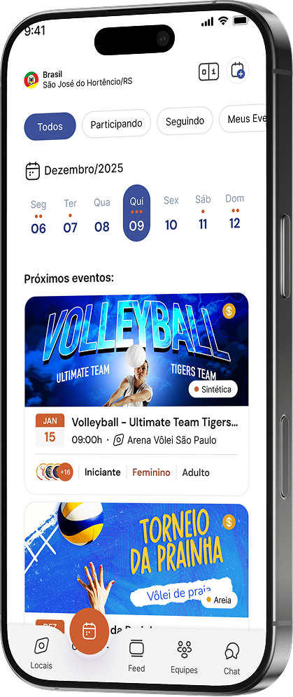
Atletas, equipes, eventos e quadras reunidos
em uma única plataforma.
Mais vôlei. Mais conexões. Mais cidades ativas.
SUA JORNADA NO ATLETA
Mostre quem você é e seu nível.
Descubra atletas, equipes, quadras e eventos.
Siga, converse e faça parte da comunidade.
Entre em jogos, torneios e campeonatos.
Poste seus momentos e faça parte da comunidade.
Perguntas frequentes
Não! O Atleta do Vôlei é para todos . Você pode ser amador, iniciante, atleta profissional, ou simplesmente apaixonado pelo esporte e querer fazer parte dessa comunidade.
No menu inferior do Atleta do Vôlei, você encontra as seções para Equipes, Locais e Eventos. Em cada seção, você pode utilizar os filtros disponíveis para encontrar opções de acordo com seu nível, localização e outras características.
Você mesmo(a) pode cadastrar o local diretamente no aplicativo . Basta clicar no ícone de (+) e cadastrar as informações da quadra. Assim, ele passa a fazer parte da plataforma e pode ser encontrado por outros atletas da região.
Sim! Você pode criar sua própria equipe ou participar de uma equipe já cadastrada.
Ao criar uma equipe, é necessário vincular um local onde ela costuma jogar . Se o local ainda não estiver no aplicativo, basta cadastrar a quadra para depois vinculá-lo à equipe.
Sim! O Atleta do Vôlei permite que você crie e gerencie seus próprios eventos, como torneios e amistosos.
Na criação do evento, o organizador pode configurar informações como f ormato da competição, quantidade de sets, sistema de disputa, chaveamento, equipes participantes, local, regulamento e outras regras do evento.
O Atleta do Vôlei é gratuito para baixar , e você pode criar seu perfil e fazer parte da comunidade.